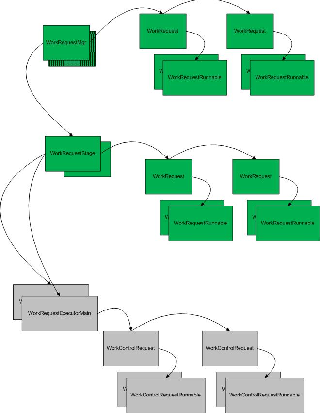

The basic concept of the threading support included in the Liberty product is to centralize the management of the threading infrastructure. In classic WAS, threads were handed out to components and were not returned until the server terminated. There were also many different pools of threads, and no clear relationship between the various thread pools, so tuning the server for different multi-programming levels was a difficult exercise and as such the system never really ran optimally
The basic structures in the threading package breaks down into 4 objects.
Internally there are some subclasses of WorkRequest knows as a WorkControlRequest. These are used to control the executor threads that are associated with the WorkRequestStage. These control requests get queued directly to the thread and their purpose in live is to perform control functions within this threading framework.
This is a picture of the relationships of the various control structures (green boxes are available outside the bundle):
The startup of a stage is fairly simple, the stage object initializes itself, ensuring the queue starts empty. It reads from the configuration what the Multi-programming Level is, in the current code this means the number of threads that are to be started. Executor threads are started at this time, and they start looking on the queue for work to perform. If there is no work, the thread waits until work is added to the queue. Once this is done, all threads are waken, and they race to the queue.
There are two forms of shutdown, an immediate shutdown and a quiesce. In both cases, the stage stops accepting new work, any attempt to queue new work will be met with an exception telling the caller that the stage is in a shutdown mode.
To be added, once complete
To be added, once complete
None